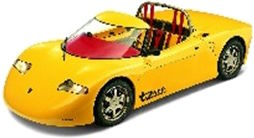

In the first Magic School Bus book, Ms. Frizzle’s class visits the waterworks and learns about the water cycle.
Looks like this cycle is missing all the labels. To compound the problem, the pictures look mixed
up as well.
Can you help the students find the missing nouns and reorder the cycle?


